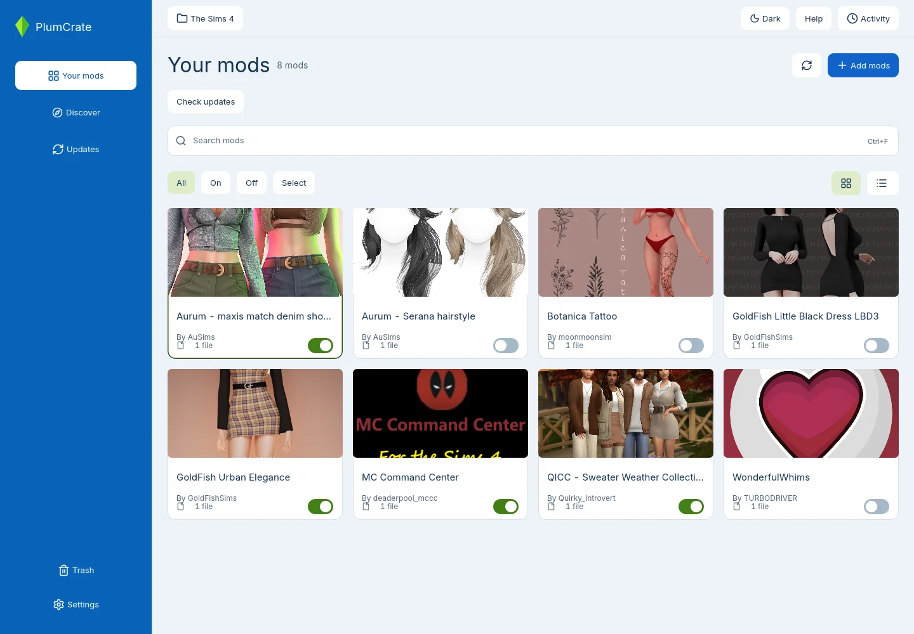

Your mods,
step by step.
A guide to using Sims 4 Mod Manager on Linux. Start with the mods you already have. You do not need an API key for local mod management.
The app is in early alpha. Keep a separate backup of your collection and game saves before trying it with your main game.
Get the app
- Open GitHub releases and choose the Linux AppImage when one is available. If there is no AppImage, there is no ready-to-run download yet.
- Save the AppImage somewhere you want to keep it. In your file manager, open its properties and allow it to run as a program. The label varies by Linux desktop.
- Open the AppImage to start the app.
Close The Sims 4 before changing your mod collection.
Choose your game folder
- Open the folder control at the top of the app. Use Choose folder or Change folder if the detected location is wrong.
- Select the The Sims 4 data folder that contains Mods. Select its parent folder, not Mods itself or the game installation folder.
- Check that the app is showing the folder used by the game you actually play. Linux installations through Wine or Proton can have more than one game-data location.
Launch the game once if it has not created its data folders yet. You can change the selected folder later.
Let the game load mods
In The Sims 4, open Game Options → Other. Enable Enable Custom Content and Mods and, if required by your mods, Script Mods Allowed. Apply the changes and restart the game. Game updates can disable mods again. Follow the creator's compatibility instructions before turning them back on.
Game settings: EA's mod installation guide.
Import your mods
- In Your mods, open Add mods.
- Choose Import folder for a mod folder or Import ZIP for a downloaded archive.
- Select the file or folder. Review the path and suggested name, then select Import.
The app copies the mod into its managed library and enables it in the selected game. Your original download stays in place. If enabling is blocked, the imported mod stays in the library. Read the bottom status, resolve the conflict, and enable that entry instead of importing it again.
Already have mods in your game folder? Review the existing files before agreeing to move them into the managed library.
Use your library
Search names and filenames as you type. Use All, On, and Off to narrow the results. The card/list controls switch between photos and compact rows.
Use a mod's On/Off switch to choose whether it loads in the selected game. The switch applies immediately. Select the card or row to inspect files and source information. Right-click an entry for more actions.
On means the app enabled the files. It does not guarantee that the mod is compatible with your game version or that every dependency is installed. Read the creator's instructions.

CurseForge & API access
CurseForge browsing, source lookup, browser-assisted installation, and update checks need an authorized API key. Local imports and library management work without one. You can download mods from a creator's official page in your browser and import them locally.
Can I get a personal key?
CurseForge documents an application process for third-party developers, followed by Overwolf review. It does not confirm a general personal-key process for players using this app. Its terms restrict transferring or sharing keys. We cannot promise that your intended use is approved.
If you need API access, read the official application instructions and API terms, section 2.2. Follow the application link in that article, accurately describe your intended use, and wait for a decision. Ask CurseForge support if you are unsure whether your use is covered. This guide does not establish permission to use an API key.
Already have authorized access?
- In the desktop app, open Settings → Connections.
- Enter your authorized key in CurseForge API key.
- Select Save changes, then return to Discover.
Enter the key only in your local desktop app. Do not paste it on this website, in chat, in issues, or in screenshots. Unsaved settings do not change the key used for requests.
Install a mod from Discover
- Search for a project and open View details. Read the description and dependencies.
- Choose Download via website…. Review the release, browser Downloads folder, and target Sims 4 folder.
- Select Start browser download. Complete any Download or save action on the official page.
- Keep the app open. It checks the completed download, imports it, and enables it in the game you approved. Your original download stays in place.
Review each dependency separately. If no suitable release is offered, use the official website and local import instead.
Official API information checked on October 20, 2026. CurseForge decides access and may change its requirements.
Check mod updates
Select Check updates in Your mods or Updates. Checks need authorized CurseForge access and a confirmed CurseForge project attached to the mod. A manually saved website link alone is not enough.
- If needed, use Find source and confirm the correct project. Review the evidence. A similar name is not proof of a match.
- For a mod without a known installed version, open its details. Under Record installed release, select the release you actually installed, review it, and confirm. If you cannot identify it, leave the version unknown.
- Select Check this mod. If an update is available, use Open mod page, read the release instructions, and download it yourself.
The check does not replace mod files. You replace your local files yourself and then record the newly installed release. A newer release may target a different game version. Browser-assisted imports already record their installed release when you approve installation.
Remove & restore
To keep a mod but stop it loading, turn it Off. To remove a managed mod, open its actions, choose Move to trash, and review the confirmation.
Open Trash or Restore from trash to find recoverable entries. Choose the entry, review the destination, and confirm the restore. The app checks that it owns files before removing its links and leaves unmanaged files alone.
Save your settings
Appearance changes themes, Folders manages remembered game folders, and Connections contains the optional API key. Select Save changes to apply your edits. Leaving Settings keeps the draft; Discard changes restores saved values.
Backup exports settings, not your mod files or game saves. API keys are excluded unless you explicitly include them. Use a separate backup for your collection and saves.
AppImage users can check App updates for a new app version. App updates and mod updates are different. Downloading or restarting for an app update needs your approval.
When something goes wrong
- A mod is On but does not appear in game
- Check the selected game-data folder, the game's mod options, the mod's supported game version, and the creator's dependencies. Restart the game after changing its mod options.
- An import finished but could not enable
- Read the bottom status for a conflict. The imported copy is still in the library. Resolve the conflict before enabling it again.
- Discover rejects my key
- Check that you selected Save changes and that the key is authorized for this use. Contact CurseForge for access issues. You can still manage local mods without a key.
- I need to report a bug
- Open an issue with your Linux distribution, app version, the steps you took, and the message shown. Hide API keys and private paths in screenshots.